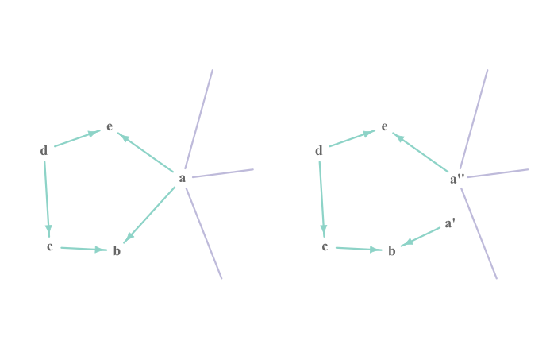
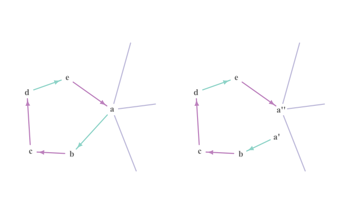
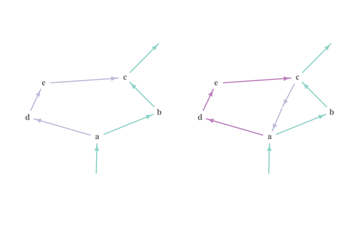
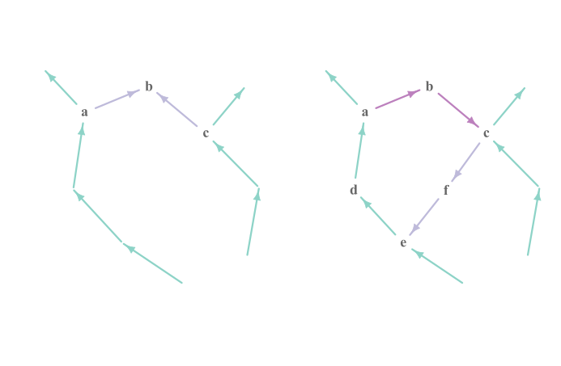
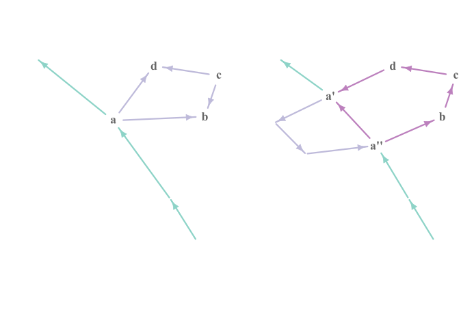

[Notes] Spectral analysis of large dimensional random matrices by Zhidong Bai & Jack W. Silverstein.
Two-edge Connected Graphs
图结构 Graph Structure
Let $G = (V, E, f \times g)$ be a directed graph.
Assume that $G$ is two-edge connected, in the sense that
- $G$ is weakly connected.
- After removing any $e \in E$ from $G$, the resulting subgraph is still weakly connected.
Menger's theorem (unweighted version of max-flow min-cut theorem): The graph $G$ is two-edge connected if and only if for any pair of vertices $a, b \in V$, there exists two edge-disjoint undirected paths from $a$ to $b$.
Below we assume that $\big \{ \mathbf{T}^{(j)} : j \in [k] \big \}$ is a collection of matrices satisfying the consistent dimension restriction given by $G$.
Graph-Associated Value
Let $\mathbf{v} = (i_a)_{a \in V}$, define
Then for any $a \in V$, it holds that
Proof of Lemma [GM-3]
证明：
如果 $G$ 仅有一个顶点，
因此，不失一般性，可以假设 $t \geq 2$。
当 $t \geq 2$ 时，出于 $G$ 的 $2$-边连通性，可以找到一个经过顶点 $1$，且长度至少为 $2$ 的简单无向回路。此回路包含了两条不同的与 $1$ 邻接的边，不失一般性，假设这两条边分别为 $e_1$ 与 $e_2$，且与 $e_1$ 邻接的另一个顶点为 $2$。
将 $e_1$ 在顶点 $1$ 处断开，可以得到 $\widetilde{G}= \big ( \{ 0 \} \cup V, \widetilde{E}, \phi \times \varphi \big)$，具体来说，就是
- 将 $e_1$ 附在顶点 $0$ 上，即
- 其余边保持不变，即 $j \not= 1$ 时，令 $\phi(j) = f(j)$ 及 $\varphi(j) = g(j)$。
这意味着，$G$ 中那条经过顶点 $1$ 的简单无向回路在 $\widetilde{G}$ 中变成了从 $0$ 到 $1$ 的简单无向路径。这里将这条路径构成的子图记为 $\widetilde{G}_d$。

注意此时 $\mathbf{T}^{(j)}$ 也满足 $\widetilde{G}$ 给出的维度一致性约束。取 $\mathbf{v}_1 = (i_a)_{a \in V \backslash \{ 1 \}}$，可以定义与 $\widetilde{G}$ 关联的多重矩阵
不难看出
因此，为了得到所需结论，仅需证明
又注意到调转 $\widetilde{G}$ 中边的指向以及分裂 $V \backslash \{ 1 \}$ 中的顶点并不在实质上改变上述等式的两端，因此以下将通过这两种操作将 $\widetilde{G}$ 转化为具有层级结构的图，从而可以应用 [GM-2] 并得到所需结论。
首先需要说明的是，$G$ 中的边与 $\widetilde{G}$ 中的边有一一对应关系，除了 $0$ 和 $1$ 之外的顶点也有一一对应关系。因此，上述调整可以对图 $G$ 以及图 $\widetilde{G}$ 同时进行，使得在每一个阶段，$G$ 在断开 $e_1$ 之后得到的图都是 $\widetilde{G}$，等式 $\operatorname{tr} \mathbf{T}(\widetilde{G}) = T(G)$ 也时刻保持成立。
另外，不难发现上述两种操作都不影响 $G$ 的 $2$-边连通性。
[step 0] 首先，调整 $\widetilde{G}$ 中边的指向，同时相应调整 $G$ 中边的指向，使得 $\widetilde{G}_d$ 构成一条从 $0$ 指向 $1$ 的简单有向路径。不难验证 $\widetilde{G}_d$ 满足层级图的所有条件，称为图 $\widetilde{G}$ 中的已定向部分。

接下来将对 $\widetilde{G}_d$ 进行归纳。假设 $\widetilde{G}_d$ 作为 $\widetilde{G}$ 中的已定向部分满足层级图的所有条件，但 $\widetilde{G}_d \not= \widetilde{G}$，即 $\widetilde{G}$ 中仍包含了某些不在 $\widetilde{G}_d$ 中的边，称为未定向边。
现断言，存在 $\widetilde{G}$ 中的一条仅由未定向边构成的无向路径 $p$，使得 $p$ 只有两个终端在 $\widetilde{G}_d$ 中，其余所有的中间节点都在 $\widetilde{G}_d$ 之外，且中间节点各不相同。
- 如果 $\widetilde{G}_d$ 已经包含了 $\widetilde{G}$ 中的所有顶点，那么任意一条未定向边的两个端点都在 $\widetilde{G}_d$ 中，上述推断成立。
- 否则，存在一个不在 $\widetilde{G}_d$ 中的顶点 $b \in V \backslash \{ 1 \}$。任取 $\widetilde{G}_d$ 中的一个顶点 $c$，根据 $G$ 的 $2$-边连通性，在 $G$ 中可以找到两条没有公共边的从 $b$ 到 $c$ 的简单无向路径。
将这两条路径映射到 $\widetilde{G}$ 中，并在 $b$ 处粘合，就得到了一条没有重边的无向路径。这条路径一开始在 $\widetilde{G}_d$ 内，中间会离开 $\widetilde{G}_d$，最后会再返回 $\widetilde{G}_d$。因此，总可以在这条路径上截取出符合上述推断的子路径。设 $p$ 的两个终端分别为 $a$ 和 $c$，以下将针对其进行分类讨论。注意对 $\widetilde{G}$ 作调整时，需要对 $G$ 作同步调整，之后不再赘述。
[case 1] $a \not= c$ 且 $\widetilde{G}_d$ 中存在从 $a$ 到 $c$ 的有向路径。
那么，在 $\widetilde{G}$ 中调整 $p$ 上各条边的指向，使得其构成一条从 $a$ 到 $c$ 的有向路径，并将其并入到 $\widetilde{G}_d$ 中。
如果 $p$ 的加入使得 $\widetilde{G}_d$ 中出现有向环路，考虑到 $p$ 的中间节点此前都不在 $\widetilde{G}_d$ 中，因此该环路必然包括整条路径 $p$。换言之，$\widetilde{G}_d$ 此前就包含了一条从 $c$ 到 $a$ 的有向路径，这与 $\widetilde{G}_d$ 具有层级结构的假设矛盾。

[case 2] $a \not= c$ 且 $\widetilde{G}_d$ 中不存在从 $a$ 到 $c$ 或者 $a$ 到 $c$ 的有向路径。
那么，在 $\widetilde{G}$ 中调整 $p$ 上各条边的指向，使得其构成一条从 $a$ 到 $c$ 的有向路径 (反之亦可)，然后将其并入到 $\widetilde{G}_d$ 中。
类似地，如果 $p$ 的加入使得 $\widetilde{G}_d$ 中出现有向环路，那么 $\widetilde{G}_d$ 此前就包含了一条从 $c$ 到 $a$ 的有向路径，与这一情形的前提矛盾。

[case 3] $a = c$，即 $p$ 构成一条无向回路。
考察 $\widetilde{G}$ 中与 $a$ 邻接的边，将其分配到两个集合 $J^\prime, J^{\prime \prime} \subset [k]$ 之中。
- 假设 $e_j$ 在 $\widetilde{G}_d$ 中且与 $a$ 邻接，注意 $\widetilde{G}_d$ 不包含有向环路，因此 $e_j$ 只能有一个端点为 $a$。
如果其起点为 $a$，那么将 $j$ 归入集合 $J^\prime$。如果其终点为 $a$，那么将 $j$ 归入集合 $J^{\prime \prime}$。- 路径 $p$ 上有且仅有两条与 $a$ 邻接的边，分配时仅需确保 $J^\prime$ 和 $J^{\prime \prime}$ 各包含一条边。
- 对于其它与 $a$ 邻接的边，可以分配到任意一个集合中。
然后，将顶点 $a$ 分裂成两个顶点 $a^\prime$ 以及 $a^{\prime \prime}$，添加一条从 $a^\prime$ 到 $a^{\prime \prime}$ 的边，并将 $J^\prime$ 和 $J^{\prime \prime}$ 中的边分别连接到 $a^\prime$ 和 $a^{\prime \prime}$。对于路径 $p$ 上的未定向边，则调整其方向使得其构成一条从 $a^\prime$ 到 $a^{\prime \prime}$ 的有向路径。
如果 $p$ 的加入使得 $\widetilde{G}_d$ 中出现有向环路，那么此环路必然包括一条从 $a^{\prime \prime}$ 到 $a^\prime$ 的有向路径，换言之，$\widetilde{G}_d$ 此前就包含了一条包含经过 $a$ 的有向环路，这与 $\widetilde{G}_d$ 具有层级结构的假设矛盾。

[conclusion] 注意在上述递归步骤中，不在 $\widetilde{G}_d$ 中的边即未定向边至少减少 $1$ 条。因此最后总能使得 $\widetilde{G}_d = \widetilde{G}$，证毕。
Connected Graphs
Let $G = (V, E; f \times g)$ be a directed graph.
An edge $e \in E$ is called a cutting edge if $\big ( V, E \backslash{\{ e \}} \big )$ is disconnected (in the sense of weakly connectivity).
Let $E_0 = \{ e_j : j \in J_0 \}$ be the set of cutting edges in $G$. Here $J_0 \subset [k]$.
Each of the connected components in the graph $\big ( V, E \backslash E_0 \big )$ is two-edge connected, call the MC blocks.
Thus there exists a partition $\big \{ B_{\ell}: \ell \in [\ell_0] \big \}$ of $V$ such that for all $\ell \in [\ell_0]$, we have $B_{\ell} \not= \varnothing$, and the induced subgraph $G[B_\ell]$ forms a MC block of $G$.
On the other hand, contracting all the MC blocks of $G$ will result in a tree formed by cutting edges.
[GM-4]
Let $\mathbf{v} = (i_a)_{a \in V}$, define
Then it holds that
where
证明：
如果 $J_0 = \varnothing$，即 $G$ 为 $2$-边连通的，那么上述结论退化为 [GM-3]。
现对割边的数量 $|J_0|$ 进行归纳：假设 $n \in \mathbb{N}$ 并且 [GM-4] 的结论在 $|J_0| \leq n$ 时成立，接下来考虑 $|J_0| = n+1$ 的情形。
注意到 $G$ 在各个 MC 块收缩之后构成一棵树，因此仅与一条割边相连的 MC 块至少有两个。任取
那么存在 $\ell \in [\ell_0]$ 使得 $a_0 \notin B$ 并且 MC 块 $B_\ell$ 仅与一条割边相连。不失一般性，可以假定
- $\ell = 1$，且诱导子图 $G[B_1]$ 的边集为 $\{e_j: j \in J_1 \}$，
- 与 $B_1$ 相连的割边为 $e_1 = \big ( f(1), g(1) \big )$。注意到 $e_1$ 的指向既不影响 $|T(G)|$ 的值，也不影响 $\left | \mathbf{T}^{(1)} \right |_{0}$ 的值，因此还可以假定 $f(1) \in B_1$ 而 $g(1) \notin B_1$。
现构造图 $\widetilde{G} = ( V \backslash B_1, \widetilde{E}, \phi \times \varphi )$ 如下：从 $G$ 中移除 MC 块 $B_1$ 中的所有顶点，并添加一条从 $g(1)$ 到自身的边 $\widetilde{e}_0$。换言之，$\phi$ 以及 $\varphi$ 的定义域是 $\widetilde{J} := \big ( \{ 0 \} \cup [k] \big ) \backslash \big ( \{ 1 \} \cup J_1 \big )$，并且
- $\phi(0) = \varphi(0) = g(1)$，
- 对于其余的 $j \in [k] \backslash (\{ 1 \} \cup J_1 )$，则有 $\phi(j) = f(j)$ 与 $\varphi(j) = g(j)$。
令 $\mathbf{v}_1 = (i_a)_{a \in B_1}$，并规定 $\widetilde{e}_0$ 对应 $m_{g(1)}$ 维的对角矩阵 $\mathbf{T}^{(0)}$，其中
此时 $\left \{ T^{(j)} : j \in \widetilde{J} \right \}$ 满足了图 $\widetilde{G}$ 给出的维度一致性条件。如果令 $\mathbf{v}_2 = (i_a)_{a \in V \backslash B_1}$，那么
注意 $\widetilde{e}_0$ 在 $\widetilde{G}$ 中必然不是割边，因此 $\widetilde{G}$ 中的割边构成的集合是 $\{ \widetilde{e}_j \}_{j \in J_0 \backslash \{ 1 \}}$，非割边构成的集合是 $\{ \widetilde{e}_j \}_{j \in (\{ 0 \} \cup [k]) \backslash (J_0 \cup J_1)}$。
由于 $\big | J_0 \backslash \{ 1 \} \big | = n$，根据归纳假设，可以得到
考虑到 $G[B_1]$ 的 $2$-边连通性，应用引理 [GM-3]，可以得到
综合上述两式，即可得到所需结论：
[GM-5]
Let $W \subset V$ be a subset of vertices.
Donate by $\sum_{\mathbf{v}|W}$ the summation running for $\mathbf{v}$ subject to the restriction that $i_a \not= i_b$ if $a, b \in W$ and $a \not= b$.
Then,
证明：
如果 $| W | \leq 1$，上述结论即为引理 [GM-4] 中的结论。
现对 $W$ 的基数进行归纳：假设 $n \in \mathbb{N}$ 并且上述结论在 $|W| = t_0 (\geq 1)$ 时成立，那么对于 $|W| = t_0 + 1$ 的情形：
不失一般性，假定 $1, 2 \in W$，并且 $m_1 \geq m_2$。
现构造图 $\widetilde{G} = ( V \backslash \{ 1 \}, \widetilde{E}, \phi \times \varphi )$ 如下：将 $G$ 中的顶点 $1$ 和 $2$ 视作一个整体，换言之，对任意的 $j \in [k]$，规定
考虑到 $m_1 \geq m_2$，对于 $j \in [k]$，当 $f(j) = 1$ 或 $g(j) = 1$ 时，对应地规定 $\widetilde{\mathbf{T}}^{(j)}$ 为矩阵 $\mathbf{T}^{(j)}$ 前 $m_1$ 行或前 $m_1$ 列构成的子矩阵。否则就直接令 $\widetilde{\mathbf{T}}^{(j)} = \mathbf{T}^{(j)}$。
这样一来，$\big \{ \widetilde{\mathbf{T}}^{(j)} : j \in [k] \big \}$ 就满足了图 $\widetilde{G}$ 给出的维度一致性约束。
令 $\widetilde{W} = W \backslash \{ 1 \}$，并记 $\big \{ \widetilde{e}_j : j \in \widetilde{J}_0 \big \}$ 为图 $\widetilde{G}$ 中的割边构成的集合，根据归纳假设，
注意 $G$ 中的割边在 $\widetilde{G}$ 可能不再是割边。另一方面，一条边如果在 $G$ 中为割边，那么其在 $\widetilde{G}$ 中同样不会是割边，即 $\widetilde{J}_0 \subset J_0$。
另一方面，对任意的 $j \in [k]$，不难验证
因此
再次利用归纳假设，
结合上述两式即得
证毕。